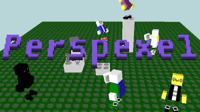
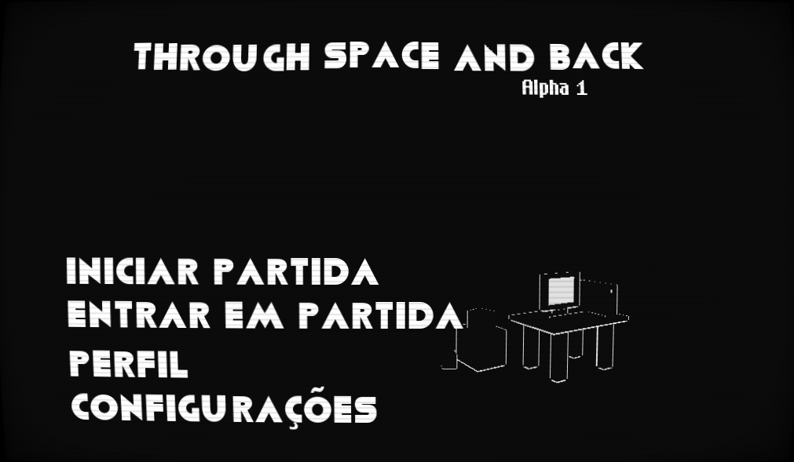

Meu nome é Rômulo Pedro Thomsen, e eu sou um programador experiente com Python e C++, eu também possuo algum conhecimento PHP, mesmo que não seja extenso. Eu também sou um compositor iniciante.
Eu nunca trabalhei profissionalmente em nenhuma das áreas que tenho conhecimento, mas sim como hobby, então fique confortável, e vamos descendo e vendo o que consegui fazer ao decorrer dos anos!
Conheça meu primeiro jogo!
Meu primeiro jogo, Perspexel, foi disponibilizado ao público entre o final de 2020 e o começo de 2021, e está disponível tanto para Windows quanto Linux.
Perspexel é um jogo sandbox simples com multijogador online para 16 pessoas em rede LAN ou através da Internet. O jogo foi feito na Godot engine como meu primeiro experimento para tentar criar algo que funcionasse, e para que eu aprendesse como usar o motor. Você pode jogar Perspexel clicando na thumbnail acima.
Como um bônus também, fique com esse remix de "Tintin on the moon" de Jeroen Tel, eu fiz esse remix no LMMS usando a fonte sonora GenesisSF, só não esqueça de certificar que seu volume não esteja muito alto!
Legal, não? Todavia minha fraqueza é com compor peças originais, mas nada que um pouco de prática não resolva.
Conheça meu próximo projeto!
Atualmente tenho um projeto chamado "Through Space and Back", que é um jogo multijogador 8v8 onde companhias futuristas lutam por domínio espacial, lutando tanto uns com os outros quanto com o jogo em si colocando os jogadores em catástrofes. O projeto atualmente se encontra em estágios iniciais ainda.
Eu acredito que um dia todas essas habilidades eu estou aprendendo poderei talvez contar uma história que inspire alguém a também fazer coisas incríveis!
Rômulo Pedro Thomsen, 2022
Clique aqui para voltar ao topo!